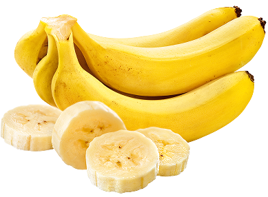
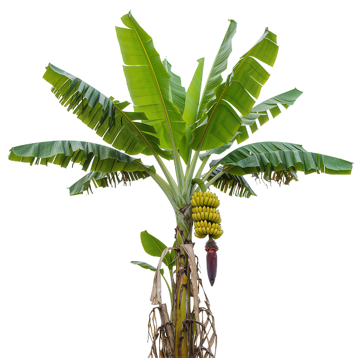
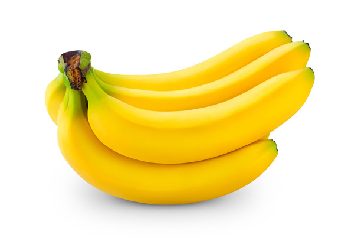

Banane, die
Substantiv, feminin
Ba | na | ne
wohlschmeckende, längliche, gelbe Frucht einer baumähnlichen tropischen Staude

Weltbananentag
45T 18H 12Min 24Sek
Experience the sound of the banana forest.
Bananenbaum
Obwohl er oft so genannt wird, ist der Bananenbaum eigentlich kein echter Baum, sondern die größte krautige Pflanze der Welt. Er wächst vor allem in tropischen und subtropischen Regionen, wo er viel Wärme und Feuchtigkeit für sein schnelles Wachstum benötigt. Nach etwa einem Jahr bildet die Pflanze einen einzigen mächtigen Fruchtstand aus, an dem die Bananen in dichten Büscheln reifen. Sobald diese Früchte geerntet sind, stirbt die Mutterpflanze ab, doch aus ihrem Wurzelstock wachsen bereits neue Schösslinge für die nächste Generation heran.

Täglich werden weltweit ca.
274'000'000
Bananen gegessen
Das Bananensorten Quiz

Wie heisst dieses Sorte?